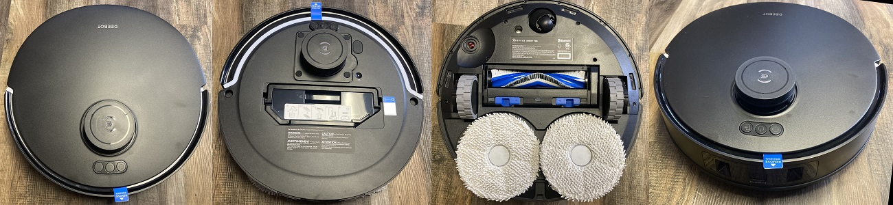

Ecovacs T30
ACTIVE[2]
Do not update firmware via OTA if you plan to ever root your device

ModelID: ecovacs.eqmf84
Codename: ZJ2310
SKU: DDX14
OEM: Ecovacs
Firmware format: encrypted
Sound format:
SOC: Rockchip RK3326 (4x)
RAM: 512 MByte RAM
Flash: 512MByte NAND
MCU: GD32F103VCT6
WiFi: FN-Link 6223a
OS: Linux (+ROS) (4.4.x)
Released: Q2/2024
Features
LIDAR: y
Camera: y
Mop: y (rotating)
Waterpump: y
Towerbumper: y
IR dropsensors: 6x
IR sidesensors: y
Frontsensor: Linelaser
Carpetsensor: y (ultrasonic)
Brush type: rubber+brush
Auto Empty: Yes (with default base station)
Auto Mop Cleaning: Yes (with default base station)
Cloud support: , ecovacs
Rootability
Root supported? : y (Q2/2024)
Root method public? : y
Root complexity: easy (UART)
Valetudo support: n
Ressources
Rooting How-to
FCC ID: 2A64B-DDX14
TÜV privacy certification: y
Comments
Has Microphone. Has 2 sidebrushes. Camera cannot be used for live viewing. WARNING: The base station is voltage dependant only. Operation of the 110V base station in a region with 220V will make the auto empty fan explode!
Also known as SKUs (not complete): z4lvk7, 3w7j5e, 4vhygi, tlthqk, 8tyt2y, eqmf84, 4bdkrs, 9gqyaq, kr9c86, ue8kcc, ee23uv, cb69w5, xco2fc
Firmwares
| Region | gl |
| first seen | 2024-07-03 |
| Type | MD5 | Filename | Version | Datetime | Size | Regions |
Changelogs
These logs are extracted from official firmware releases. They might or might not contain useful information.
| Type | Version | Datetime | Changelog | Diff |
[2] Active: A device is still sold, and receives support by the vendor or the community
You miss a device here and feel generous? Check out the Donations page here ;)
<-- Back to the overview
This information is collected over time by my rooted devices and stored in a database. There might be firmware older than this, but it is not listed here as I did not own a particular device at that time. There is no guarantee for accuracy of this information, as the availability of firmware might be device specific and region specific. Sometimes I don't have enough devices to cover all regions.
Note: If you use information from this table, please reference it, eg. "Dennis Giese, Robotinfo, https://robotinfo.dev".
Please contact me prior using any of the images.{kind=link}